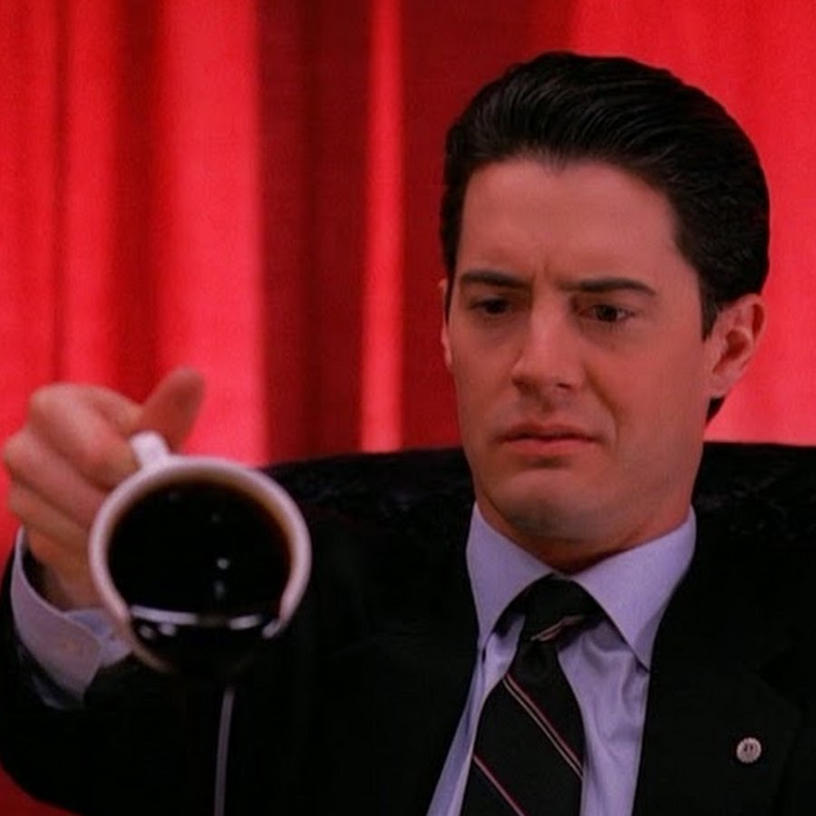

Dale Bartholomew Cooper was a special agent of the Federal Bureau of Investigation who in 1989 was assigned to investigate the brutal murder of the popular high school student, Laura Palmer in the town of Twin Peaks, Washington. He ended up falling in love with the town and gained a great deal of acceptance within the normally tight-knit community.
While trying to rescue Annie Blackburn, Cooper became trapped in a bizarre alternate reality known in local Native American legends as the Black Lodge.
Places Lived
- Twin Peaks, Washington
- The Black Lodge, Alternate Reality
“That's what you do in a town where a yellow light still means slow down, not go faster.”
– Dale Cooper